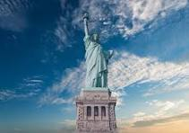
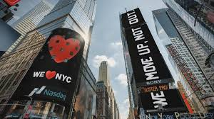
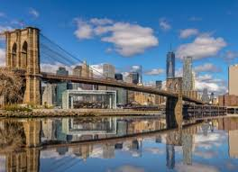

Estatua de la Libertad
La Estatua de la Libertad es un símbolo universal de libertad y democracia.
Nueva York, también conocida como "La Gran Manzana", es una de las ciudades más emblemáticas del mundo. Fundada en 1624 como una colonia comercial holandesa, ha crecido hasta convertirse en una metrópolis global y el hogar de más de 8 millones de personas.
La Estatua de la Libertad es un símbolo universal de libertad y democracia.
Un enorme parque urbano en el corazón de Manhattan, ideal para paseos y actividades al aire libre.
El cruce más famoso de Nueva York, conocido por sus pantallas gigantes y su vibrante vida nocturna.
Nueva York es un crisol de culturas y estilos de vida. Desde Broadway y su famosa escena teatral hasta los museos de clase mundial como el MoMA y el Met, la ciudad ofrece una experiencia cultural inigualable.
